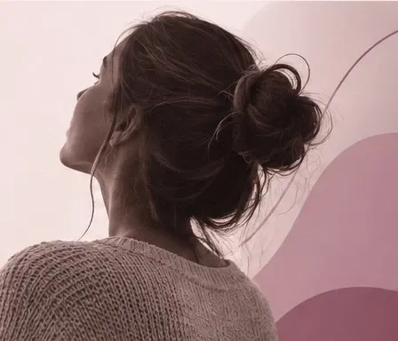
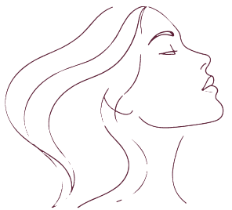

Informação também
é uma forma de proteção.
Um espaço para encontrar informação, orientação e os serviços da rede de proteção às mulheres de Caxias do Sul.
Encontre ajudaPor que este espaço existe?
A rede de proteção à mulher é ampla e reúne diferentes serviços, projetos e iniciativas. Entretanto, encontrar o caminho adequado nem sempre é simples.
Este site nasce para aproximar informação e proteção. Conheça nossa proposta